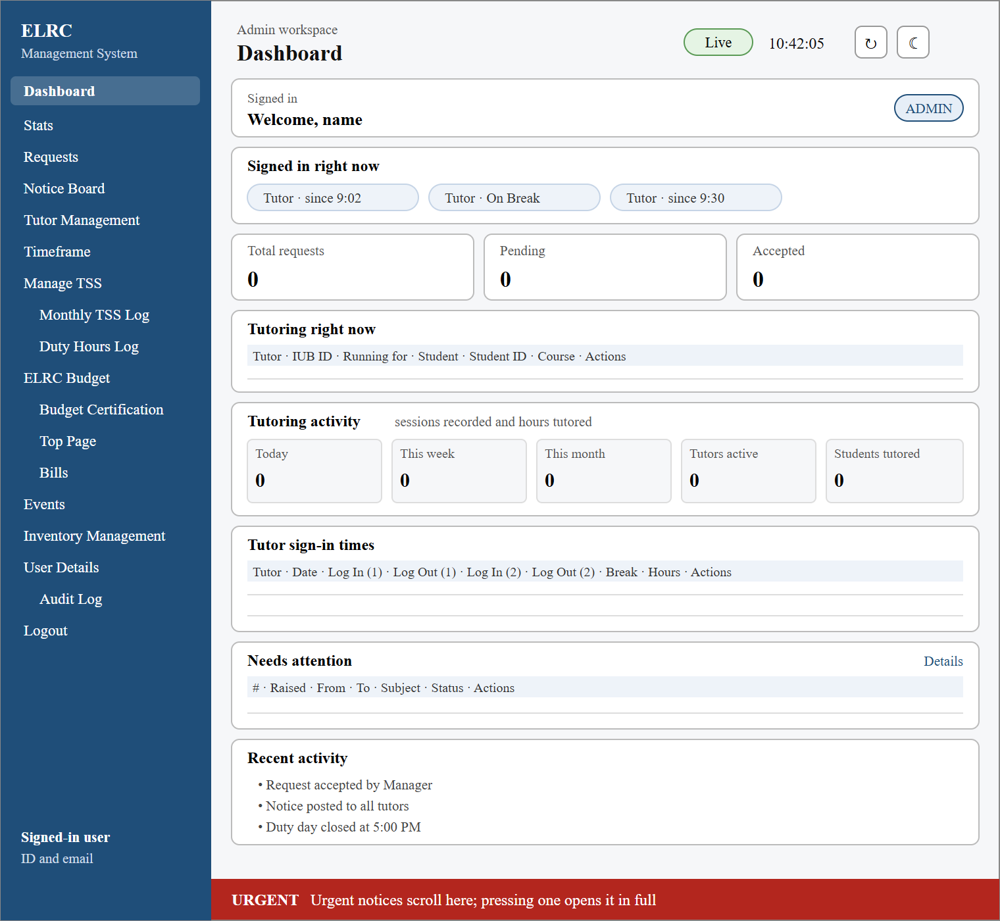

LiveCase study · 2026 · Independent University, Bangladesh
ELRC Management System
The English Language Resources Center ran on paper forms, spreadsheets and chat messages. I replaced them with one website that tutors, faculty, managers, the Head of Department and admins each sign in to and see their own console.
- Five consoles, one codebase. The four oversight consoles are generated from the tutor console by a build script, so a change is made once.
- Attendance that runs itself. Sign-in and sign-out tracking, a daily break limit, inactivity sign-out, and an automatic 5 PM close on Dhaka time.
- Live everywhere. A change in one console appears in every other within a second, without reloading.
- Paperwork from data. Monthly tutor bills, budget certification memos and cover pages are generated from logged hours, ready to print.
- Secured in the database. Role-based Firestore rules, salted PBKDF2 password hashing, a Content Security Policy and an append-only audit log.
JavaScriptHTMLCSSFirebase FirestoreFirebase AuthVercel
Documented in a 25-page Software Requirements Specification following ISO/IEC/IEEE 29148. The code is private because the system is in use; I'm happy to walk through it.
